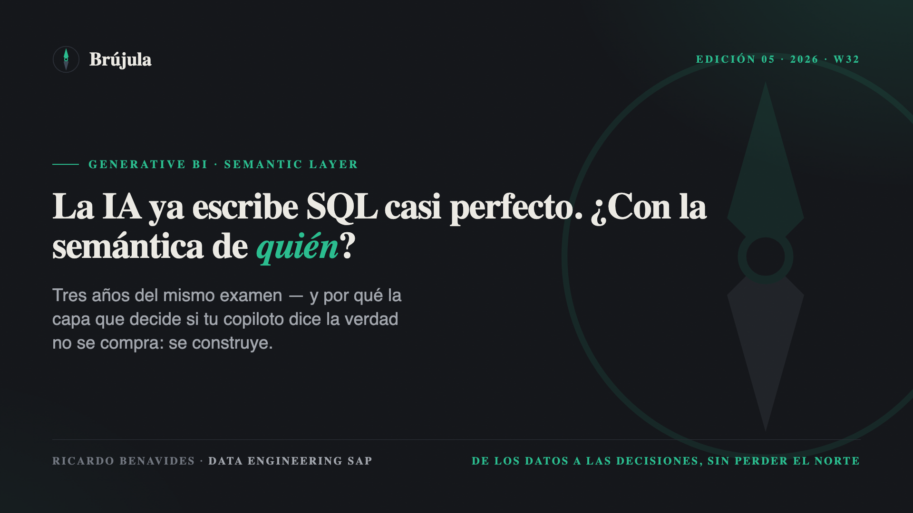
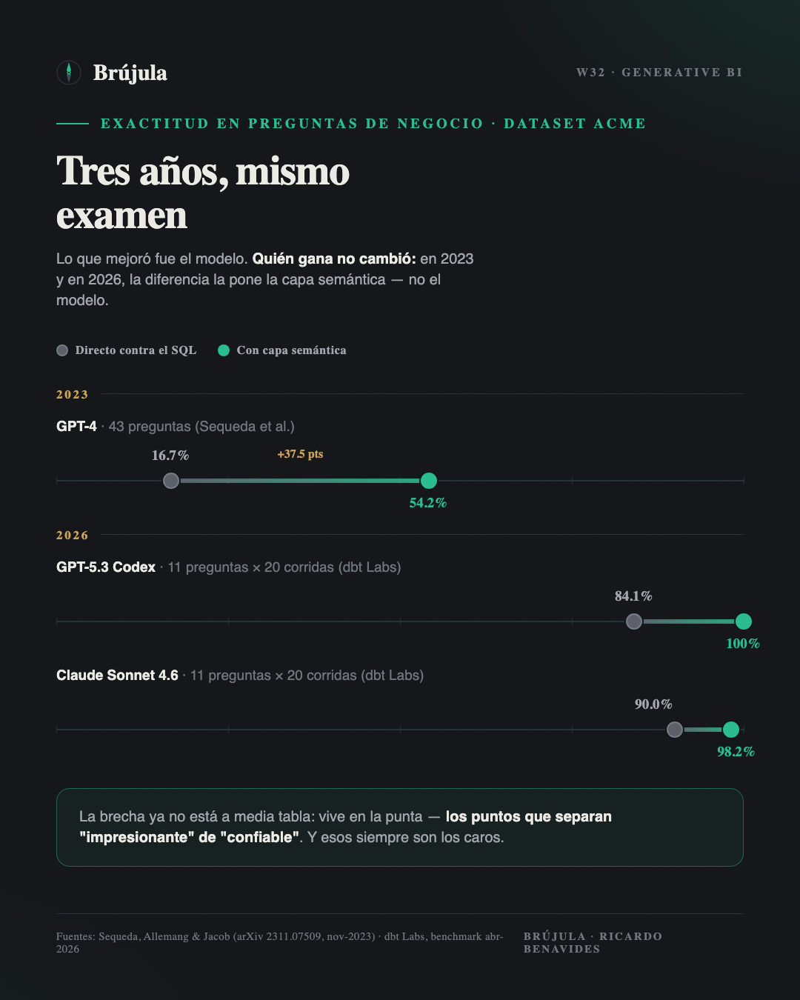
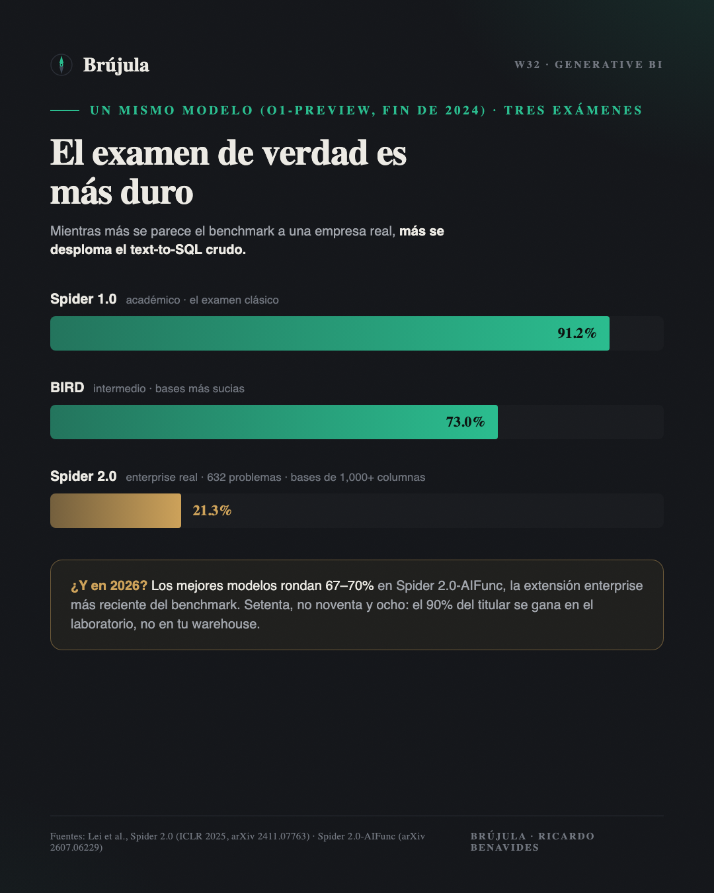

Tres años del mismo examen, y la lección que los vendors ya aceptaron.
Hay un número que lleva unos meses circulando y que todavía no aterriza en cómo las empresas están comprando sus copilotos de datos — los asistentes tipo AI/BI Genie o Copilot que responden preguntas de negocio en lenguaje natural, generando SQL sobre tus datos. En abril, dbt Labs publicó la actualización 2026 de su benchmark de text-to-SQL: los modelos de IA más avanzados del momento — probaron Claude Sonnet 4.6 y GPT-5.3 Codex —, solos contra la base de datos, aciertan entre 84% y 90% de las preguntas analíticas. Los mismos modelos, respondiendo sobre un semantic layer bien modelado, suben a 98.2% y hasta 100%.
Léelo dos veces, porque cierra un debate de años. Lo que separa un copiloto que impresiona en la demo de uno que puedes poner en producción ya no es el modelo. Es si alguien modeló la semántica sobre la que responde. Y eso abre la pregunta incómoda que este texto quiere desarrollar: ¿quién modela — y de dónde sale esa semántica?
Para entender por qué este resultado importa, hay que ir al origen. En noviembre de 2023, Juan Sequeda, Dean Allemang y Bryon Jacob publicaron el estudio que arrancó esta discusión: 43 preguntas de negocio sobre un esquema empresarial de seguros, el hoy conocido dataset ACME. GPT-4, directo contra el SQL, respondió bien el 16.7%. Con una representación de conocimiento encima — ontología, mapeos, contexto de negocio —, subió a 54.2%. Tres veces más, pero aún reprobado.
El benchmark de dbt de 2026 corre sobre ese mismo dataset — mismo terreno, herramienta de anclaje distinta: entonces un knowledge graph, hoy un semantic layer — con un subconjunto de 11 preguntas y 20 corridas por configuración. La comparación de los dos momentos cuenta la historia completa:
Sobre el set completo de preguntas, dbt reporta un agregado crudo más bajo: 64.5%. Las cifras de arriba son de los dos modelos citados, en el subconjunto.
Lo que mejoró en tres años fue el modelo — de reprobado a notable. Lo que no cambió es quién gana: en ambos momentos, la capa semántica se lleva la diferencia. Y ojo con dónde vive esa diferencia ahora: ya no son 37 puntos en la mitad de la tabla, son 8 a 16 puntos en la punta — exactamente los puntos que separan "impresionante" de "confiable". Los últimos puntos siempre son los caros.

En un tablero ejecutivo que responde cien preguntas al día, 90% de exactitud significa diez números equivocados diarios — servidos con la misma seguridad que los correctos. Nadie que haya firmado un cierre acepta esa tasa.
Y hay un detalle del benchmark más revelador que la cifra principal: los dos enfoques no fallan igual. Cuando el text-to-SQL se equivoca, suele devolver un número plausible e incorrecto, con total confianza. Cuando el semantic layer no puede responder, lo dice: error explícito, fuera de alcance. Uno te miente con seguridad; el otro te avisa que no sabe. En un entorno donde alguien firma el número antes de que llegue a un ejecutivo, esa diferencia vale más que los puntos de exactitud. Un error visible se corrige; un número plausible y falso viaja.
Aquí conviene ser honesto con la escala, porque el dataset ACME es un experimento controlado: once preguntas, un esquema de seguros semi-complejo. La academia ya midió qué pasa cuando el examen se parece a una empresa real.
Spider 2.0, el benchmark de referencia para text-to-SQL enterprise, plantea 632 problemas derivados de casos reales: bases con más de mil columnas, BigQuery y Snowflake, múltiples dialectos, transformaciones encadenadas. Cuando salió, a finales de 2024, el mejor modelo del momento — que acertaba 91.2% en el Spider clásico — resolvió alrededor del 20%. Hoy los mejores modelos rondan el 70% en Spider 2.0-AIFunc, la extensión 2026 del benchmark — otro conjunto de tareas enterprise, no el examen original. Setenta, no noventa y ocho.

La lectura obvia es que el text-to-SQL crudo, a escala real de empresa, sigue lejos de producción — el 90% del titular se gana en el laboratorio, no en tu warehouse. Pero la lectura interesante es la otra: el 98–100% del dataset ACME muestra lo que compra la curaduría en un alcance acotado. El camino a producción no es esperar un modelo más grande que domine el caos; es achicar el caos con semántica hasta que el modelo opere en un espacio donde sí puede ser confiable.
El benchmark de dbt tiene una honestidad que se agradece. Para que el text-to-SQL puro compitiera, los autores cargaron el esquema completo de la base como contexto del modelo — y ellos mismos advierten que eso no es práctico en datasets grandes. Piénsalo desde una operación SAP: miles de tablas, nombres como VBAK, VBAP, KONV, lógica repartida en extractores y rutinas. No hay ventana de contexto que aguante eso, y aunque la hubiera, el esquema no contiene lo que importa: te dice que un campo existe, no qué regla de negocio lo llena.
Y ahí está la letra chica completa: el semantic layer que produce el salto no se descarga. Se construye. Alguien tuvo que sentarse a definir qué es "venta neta", contra qué tipo de cambio se convierte, qué canal incluye y cuál excluye, en qué momento un pedido se convierte en venta. El modelo no aporta esa semántica. La consume.
Si queda duda de hacia dónde va esto, mira qué está construyendo cada plataforma. dbt tiene su Semantic Layer con MetricFlow. Snowflake lanzó Semantic Views. Databricks llevó sus Metric Views a Unity Catalog — la base de lo que llama Business Semantics, en GA desde abril de este año — y en el Data + AI Summit presentó Genie Ontology: una capa de contexto que aprende del uso para alimentar a Genie, todavía en preview. Cuando todos los vendors convergen en la misma pieza, deja de ser un feature y se convierte en una confesión: el modelo, solo, no alcanza. Necesita una capa curada de significado, y cada plataforma quiere ser la dueña de esa capa.
Esto lo veo operando a diario. La diferencia entre un espacio de Genie con métricas curadas e instrucciones bien puestas, y uno conectado directo a las tablas, no es sutil: es la diferencia entre respuestas que el negocio usa y respuestas que el negocio deja de consultar a la segunda semana.
SAP entendió lo mismo, y su jugada es Business Data Cloud: data products gestionados que viajan "con su contexto de negocio y semántica intactos", incluyendo la sincronización de metadata semántica hacia Unity Catalog vía Delta Sharing, ya en GA con la alianza SAP–Databricks. En el papel, es exactamente la respuesta correcta: que la semántica viaje con el dato.
Pero hay que leer qué semántica viaja. La que BDC empaqueta es la del contenido estándar — el modelo de dominio que SAP define y mantiene. La semántica de tu operación es otra cosa: vive en los extractores modificados, en las rutinas de usuario, en las mil líneas del reporte Z que calcula "venta neta" de una forma que ningún documento describe. Hace unas semanas escribí que migrar un reporte Z es una autopsia, no una traducción; esta es la razón de fondo. Veinte años de decisiones de negocio cristalizadas en código custom no vienen en ningún data product estándar. Esa capa — la que de verdad decide si tu copiloto dice la verdad — nadie te la puede vender. Se extrae, se documenta y se modela. Con trabajo.
Viene una ola de proyectos que van a comprar el copiloto y saltarse el modelado. El pitch es irresistible: conéctalo al warehouse y pregunta en lenguaje natural. Y va a funcionar — en la demo, con las preguntas fáciles, con las tablas limpias. En producción, la pregunta del CFO no es fácil: cruza canal, segmento de precio, moneda y un ajuste que solo existe porque alguien lo decidió hace siete años y ya no está en la empresa.
La secuencia correcta es la aburrida. Primero extraer la semántica de donde vive — y en las operaciones industriales de este lado del mundo, vive en SAP. Después modelarla en una capa que el modelo pueda consumir: métricas definidas una vez, gobernadas, con dueño — Metric Views, MetricFlow, el sabor que tu stack hable. Y al final, solo al final, conectar el copiloto. Es el orden que tres años de benchmarks implican y que veinte años de disciplina de datos confirman: el techo lo pone la fuente, no el destino.
Antes de evaluar cualquier copiloto de datos, corre una prueba que no cuesta licencias: toma tus tres métricas más peleadas y pídele a dos personas de negocio que te las definan por escrito. Si las definiciones no coinciden — y en mi experiencia, no coinciden —, tu siguiente paso no es el copiloto. Es el modelado. El copiloto solo va a responder, con mucha seguridad, la versión de la métrica que nadie acordó.